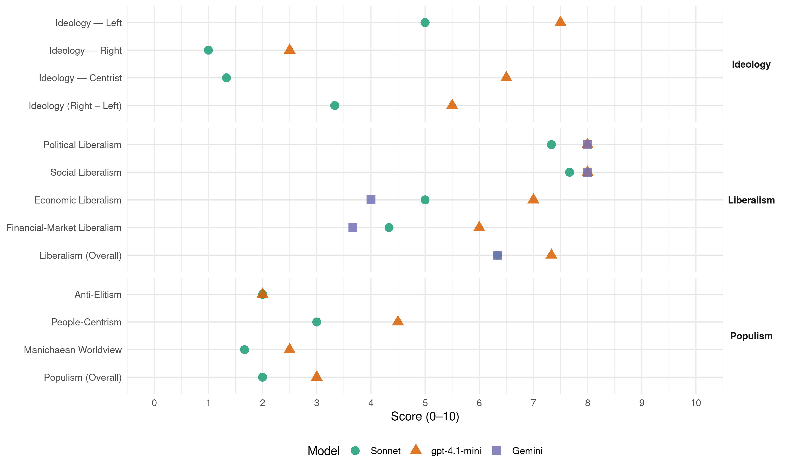

PS (Belgium, 1991)
manifesto_id 21322_199111
Get full text: This site shows derived annotations and short verbatim quotes only. The full manifesto text is © Manifesto Project / WZB — obtain it via manifesto-project.wzb.eu using the manifesto_id above.
Headline scores
| Dimension | Sonnet | gpt-4.1-mini | Gemini |
|---|---|---|---|
| Populism (Overall) | 2.0 | 3.0 | – |
| Anti-Elitism | 2.0 | 2.0 | – |
| People-Centrism | 3.0 | 4.5 | – |
| Manichaean Worldview | 1.7 | 2.5 | – |
| Ideology (Right − Left) | 3.3 | 5.5 | – |
| Liberalism (Overall) | 6.3 | 7.3 | 6.3 |
| Political Liberalism | 7.3 | 8.0 | 8.0 |
| Social Liberalism | 7.7 | 8.0 | 8.0 |
| Economic Liberalism | 5.0 | 7.0 | 4.0 |
| Financial-Market Liberalism | 4.3 | 6.0 | 3.7 |
Evidence per dimension
Economic Liberalism
Gemini · score 3.0 · verified · chunk 1
“prêcher le”tout au marché” jusqu’à ses conséquences brutales”
P.S. au pouvoir a voulu imprimer sa marque à l’esprit du temps. Quand il était de bon ton de prêcher le “tout au marché” jusqu’à ses conséquences brutales, nous avons réintroduit la générosité responsable.
Gemini · score 3.0 · verified · chunk 2
“imposer des règles au libre jeu du marché”
C’est en continuant à imposer des règles au libre jeu du marché et en dotant de fondements légaux
Gemini · score 6.0 · verified · chunk 3
“conquête de nouveaux marchés”
entreprises à être attentives et actives pour la conquête de nouveaux marchés. Les efforts nécessaires concernent aussi bien la
gpt-4.1-mini · score 7.0 · verified · chunk 1
“le retour du Cœur’,’ le respect de la personne du travailleur”
Quand il était de bon ton de prêcher le “tout au marché” jusqu’à ses conséquences brutales, nous avons réintroduit la générosité responsable. … le retour du Cœur’,’ le respect de la personne du travailleur.
gpt-4.1-mini · score 7.0 · verified · chunk 2
“le P.S. veut améliorer les moyens dont disposent les Régions pour rencontrer les besoins spécifiques des petites et moyennes entreprises”
Le P.S. veut améliorer les moyens dont disposent les Régions pour rencontrer les besoins spécifiques des petites et moyennes entreprises (PME), qu’elles soient industrielles, commerciales ou de services, notamment en matière de financement et principalement pour soutenir les nouvelles activités.
gpt-4.1-mini · score 7.0 · verified · chunk 3
“la régionalisation du Commerce Extérieur sera poursuivie”
La régionalisation du Commerce Extérieur sera poursuivie. Les Régions disposeront ainsi d’un outil plus performant prenant en considération leurs spécificités et leur permettant de situer au niveau régional l’ensemble des actions d’accompagnement d’entreprises, en liaison avec les postes diplomatiques et consulaires belges.
Sonnet · score 5.0 · verified · chunk 1
“libre circulation des travailleurs en Europe”
Toute politique de l’emploi actuelle et future doit tenir compte du contexte créé par la libre circulation des travailleurs en Europe.
Sonnet · score 4.0 · verified · chunk 2
“imposer des règles au libre jeu du marché”
C’est en continuant à imposer des règles au libre jeu du marché et en dotant de fondements légaux les solidarités que le P.S. entend contribuer à la conception d’une démarche écologique globale
Sonnet · score 6.0 · verified · chunk 3
“conquête de nouveaux marchés”
doit plus que jamais amener nos entreprises à être attentives et actives pour la conquête de nouveaux marchés.
Financial-Market Liberalism
Gemini · score 4.0 · verified · chunk 1
“lié le franc belge à la devise européenne”
stoppé l’emballement de la dette publique; la balance des paiements est redevenue positive. Pour le rendre plus fort, nous avons lié le franc belge à la devise européenne de référence, le Deutsche Mark.
Gemini · score 3.0 · verified · chunk 2
“relations avec les organismes financiers”
Cette protection devra être étendue aux relations avec les organismes financiers et sera également recherchée en matière
Gemini · score 4.0 · verified · chunk 3
“système européen des Banques centrales”
ajustement des instruments de cohésion tels que les politiques régionales et les fonds structurels européens. Le système européen des Banques centrales tout en disposant d’autonomie, devra être soumis à un contrôle démocratique.
gpt-4.1-mini · score 6.0 · verified · chunk 2
“la réforme de l’impôt des sociétés devra restaurer un parallélisme entre son rendement et la croissance des bénéfices”
La réforme de l’impôt des sociétés devra restaurer un parallélisme entre son rendement et la croissance des bénéfices, en introduisant, si nécessaire, un impôt minimum ou une formule de contrat fiscal. La cause essentielle de la faible croissance des recettes au cours des dernières années est sans conteste le résultat d’un développement quasi scientifique de la fraude et de l’évasion fiscale.
gpt-4.1-mini · score 6.0 · verified · chunk 3
“le financement monétaire des déficits budgétaires publics doit être évité”
Le système européen des Banques centrales tout en disposant d’autonomie, devra être soumis à un contrôle démocratique. Le financement monétaire des déficits budgétaires publics doit être évité. La concurrence des Etats membres en vue d’attirer des capitaux sur la base des niveaux de taxation serait hautement néfaste et pourrait entraîner une érosion de la base fiscale de certains Etats, mettant en danger certaines politiques publiques.
Sonnet · score 4.0 · verified · chunk 1
“lié le franc belge à la devise européenne”
Pour le rendre plus fort, nous avons lié le franc belge à la devise européenne de référence, le Deutsche Mark.
Sonnet · score 4.0 · verified · chunk 2
“crédit à la consommation leur apportent effectivement”
Deux législations importantes concernant directement les consommateurs ont été votées en 1991. Nous souhaitons que les mises en œuvre de ces lois relatives aux pratiques du commerce et au crédit à la consommation leur apportent effectivement les protections recherchées
Sonnet · score 5.0 · verified · chunk 3
“concurrence des Etats membres en vue d’attirer des capitaux”
La concurrence des Etats membres en vue d’attirer des capitaux sur la base des niveaux de taxation serait hautement néfaste
Political Liberalism
Gemini · score 8.0 · verified · chunk 1
“maintien d’une société démocratique et civilisée”
tolérance et le dialogue indispensables au maintien d’une société démocratique et civilisée. A cet égard, la pluralité des réseaux
Gemini · score 8.0 · verified · chunk 2
“garantir la sécurité juridique”
planification réglementaire souple et bien conçue continue fondamentalement à garantir la sécurité juridique et à protéger des appétits
Gemini · score 8.0 · verified · chunk 3
“démocratisation des institutions zaïroises”
détermination a contribué à accélérer le processus - difficile - de démocratisation des institutions zaïroises. - notre pays a respecté pleinement
gpt-4.1-mini · score 8.0 · verified · chunk 1
“la démocratie en progrès, fondée sur la promotion des hommes et des femmes”
Ils la construisent. C’est cela l’évidence socialiste : une démocratie en progrès, fondée sur la promotion des hommes et des femmes, dans le respect mutuel.
gpt-4.1-mini · score 8.0 · verified · chunk 2
“la garantie de l’accès à la justice, sans discrimination d’aucune sorte doit se concrétiser par la création d’une structure de l’aide légale”
Une société qui veut l’ambition démocratique doit améliorer l’information du citoyen sur ses droits et ses obligations, assurer un meilleur accueil des justiciables et rendre le langage, les décisions judiciaires et les actes de procédure plus compréhensibles. II convient à cet effet de repenser le rôle et la place de la règle de droit (loi, décret, arrêté…) dans l’organisation des rapports sociaux. La garantie de l’accès à la justice, sans discrimination d’aucune sorte doit se concrétiser par la création d’une structure de l’aide légale qui contribuera i assurer la défense des droits et intérêts de tous les citoyens sur un pied d’égalité.
gpt-4.1-mini · score 8.0 · verified · chunk 3
“le respect des engagements pris à l’égard des anciens combattants”
Le P.S. continuera à veiller au respect des engagements pris à l’égard des anciens combattants et des victimes du devoir patriotique. II ne tolérera aucune atteinte à leur statut et à leur dignité, comme le font toutes les propositions visant à instaurer l’amnistie pour faits de collaboration.
Sonnet · score 7.0 · verified · chunk 1
“une démocratie en progrès”
C’est cela l’évidence socialiste : une démocratie en progrès, fondée sur la promotion des hommes et des femmes, dans le respect mutuel.
Sonnet · score 7.0 · verified · chunk 2
“respect des droits et libertés de chacun”
Le P.S. estime que le Parlement a un rôle essentiel à jouer dans le contrôle des services de police et de renseignements. Il doit, entre autres, veiller à ce que les mesures visant à mieux assurer la sécurité des citoyens s’accordent avec le respect des droits et libertés de chacun
Sonnet · score 8.0 · verified · chunk 3
“légitimité démocratique des institutions européennes”
doivent aller de pair avec une augmentation de la légitimité démocratique des institutions européennes.
Liberalism (Overall)
Gemini · score 6.0 · verified · chunk 1
“maintien d’une société démocratique et civilisée”
tolérance et le dialogue indispensables au maintien d’une société démocratique et civilisée. A cet égard, la pluralité des réseaux
Gemini · score 6.0 · verified · chunk 2
“garantir la sécurité juridique”
planification réglementaire souple et bien conçue continue fondamentalement à garantir la sécurité juridique et à protéger des appétits
Gemini · score 7.0 · verified · chunk 3
“respect des droits de l’Homme”
défende les principes fondamentaux du droit international et du respect des droits de l’Homme. H est particulièrement important de mener
gpt-4.1-mini · score 8.0 · verified · chunk 1
“une démocratie en progrès, fondée sur la promotion des hommes et des femmes”
Ils la construisent. C’est cela l’évidence socialiste : une démocratie en progrès, fondée sur la promotion des hommes et des femmes, dans le respect mutuel.
gpt-4.1-mini · score 7.0 · verified · chunk 2
“le P.S. veut améliorer les moyens dont disposent les Régions pour rencontrer les besoins spécifiques des petites et moyennes entreprises”
Le P.S. veut améliorer les moyens dont disposent les Régions pour rencontrer les besoins spécifiques des petites et moyennes entreprises (PME), qu’elles soient industrielles, commerciales ou de services, notamment en matière de financement et principalement pour soutenir les nouvelles activités.
gpt-4.1-mini · score 7.0 · verified · chunk 3
“le respect des engagements pris à l’égard des anciens combattants”
Le P.S. continuera à veiller au respect des engagements pris à l’égard des anciens combattants et des victimes du devoir patriotique. II ne tolérera aucune atteinte à leur statut et à leur dignité, comme le font toutes les propositions visant à instaurer l’amnistie pour faits de collaboration.
Sonnet · score 6.0 · verified · chunk 1
“une démocratie en progrès, fondée sur la promotion”
C’est cela l’évidence socialiste : une démocratie en progrès, fondée sur la promotion des hommes et des femmes, dans le respect mutuel.
Sonnet · score 6.0 · verified · chunk 2
“combat contre toutes les formes de discriminations”
Le P.S. poursuivra son combat contre toutes les formes de discriminations, qu’elles soient basées sur la nationalité, le sexe, les opinions politiques, philosophiques ou les croyances religieuses
Sonnet · score 7.0 · verified · chunk 3
“légitimité démocratique des institutions européennes”
doivent aller de pair avec une augmentation de la légitimité démocratique des institutions européennes.
Anti-Elitism
gpt-4.1-mini · score 2.0 · verified · chunk 1
“Nous laissons à d’autres formations politiques le soin défaire de la démagogie”
Et puis ce programme ! II nous aurait été facile de promettre monts et merveilles. Nous laissons à d’autres formations politiques le soin défaire de la démagogie. Elle n’est pas le fait des Socialistes.
gpt-4.1-mini · score 2.0 · verified · chunk 2
“les Socialistes ont substitué le principe d’un assainissement des finances publiques qui tienne à la fois compte des recettes et des dépenses afin de ne plus pénaliser les politiques sociales”
Cette description très technique ne doit pas occulter la marque de la présence du P.S. au pouvoir. Les Socialistes ont, en effet, voulu que le principal problème de gestion de ce pays - la résorption d’un dette excessive soit envisagé sous un tout autre éclairage. Au cours de la dernière législature, aux politiques de sacrifices inégalement partagés, les Socialistes ont substitué le principe d’un assainissement des finances publiques qui tienne à la fois compte des recettes et des dépenses afin de ne plus pénaliser les politiques sociales. C’est ce qu’on peut appeler le recentrage social de l’assainissement de la dette.
Sonnet · score 3.0 · verified · chunk 1
“nos néo-libéraux sont entrés dans le mutisme”
Si nos néo-libéraux sont entrés dans le mutisme, c’est parce que nous, Socialistes, avons rempli largement le mandat
Sonnet · score 2.0 · mixed · chunk 2
“grands trusts internationaux de l’agro-industrie”
les instances européennes subissent la pression des U.S.A. et des grands trusts internationaux de l’agro-industrie pour libéraliser les échanges
Sonnet · score 1.0 · verified · chunk 3
“communisme totalitaire, leur nouvelle assise démocratique”
Les pays de l’Est se débarrassent des schémas sclérosés du communisme totalitaire, leur nouvelle assise démocratique doit encore être fortifiée.
Ideology — Centrist
gpt-4.1-mini · score 7.0 · verified · chunk 1
“Nos préoccupations quotidiennes sont l’emploi, l’éducation, le cadre de vie”
Nos préoccupations quotidiennes sont l’emploi, l’éducation, le cadre de vie, la solidarité, la justice sociale, la sécurité, la tolérance’ et le parachèvement du fédéralisme afin que chacun reprenne confiance dans ses institutions.
gpt-4.1-mini · score 6.0 · verified · chunk 2
“la population belge, comme les populations immigrées d’ailleurs, attendent des pouvoirs publics un langage clair et des actes concrets”
A l’heure où de nouveaux flux venant de l’Est s’ajoutent à ceux qui venaient précédemment du Sud, la population belge, comme les populations immigrées d’ailleurs, attendent des pouvoirs publics un langage clair et des actes concrets, conditions sine qua non pour éviter la dérive vers des amalgames et des comportements xénophobes ou racistes.
Sonnet · score 1.0 · verified · chunk 1
“Nous ne voulons rien promettre que nous ne puissions tenir”
Nous laissons à d’autres formations politiques le soin de faire de la démagogie. Elle n’est pas le fait des Socialistes. Nous ne voulons rien promettre que nous ne puissions tenir !
Sonnet · score 1.0 · verified · chunk 2
“intérêt de tous”
dans l’intérêt de tous et parce que la fraude est intolérable dans un Etat de droit
Sonnet · score 2.0 · verified · chunk 3
“politique étrangère équilibrée”
le P.S. propose la poursuite d’une politique étrangère équilibrée qui serve bien entendu les intérêts de notre pays
Ideology — Left
gpt-4.1-mini · score 8.0 · verified · chunk 1
“le retour du Cœur’,’ le respect de la personne du travailleur”
Quand il était de bon ton de prêcher le “tout au marché” jusqu’à ses conséquences brutales, nous avons réintroduit la générosité responsable. … le retour du Cœur’,’ le respect de la personne du travailleur.
gpt-4.1-mini · score 7.0 · verified · chunk 2
“le P.S. prône le développement de coordinations, et ce au niveau le plus élevé possible, c’est à dire auprès, soit de l’Exécutif, soit de ses instruments les plus proches”
Dès lors, et parce que l’efficacité de la politique économique régionale implique à la fois de maintenir une cohérence générale, tout en respectant les dynamismes sous-régionaux et locaux, le P.S. prône le développement de coordinations, et ce au niveau le plus élevé possible, c’est à dire auprès, soit de l’Exécutif, soit de ses instruments les plus proches.
Sonnet · score 5.0 · verified · chunk 1
“renforcement de la démocratie économique”
Les ambitions portées par le P.S. sont le renforcement de la démocratie économique, la maîtrise des phénomènes de flexibilité, la santé et la sécurité au travail
Sonnet · score 6.0 · verified · chunk 2
“primauté des personnes et du travail sur le capital”
une éthique qui leur est commune : une finalité de services et non de profit. des processus démocratiques de décision. l’autonomie de gestion. la primauté des personnes et du travail sur le capital
Sonnet · score 4.0 · verified · chunk 3
“droits minimum pour les travailleurs”
l’établissement des droits minimum pour les travailleurs en matière de contrats de travail et de temps preste.
Ideology (Right − Left)
gpt-4.1-mini · score 6.0 · verified · chunk 1
“Nous ne voulons rien promettre que nous ne puissions tenir”
Elle n’est pas le fait des Socialistes. Nous ne voulons rien promettre que nous ne puissions tenir ! Et si nous vous demandons une nouvelle fois votre soutien, c’est pour poursuivre notre travail sur les fondations que nous avons érigées.
gpt-4.1-mini · score 5.0 · verified · chunk 2
“le P.S. prône le développement de coordinations, et ce au niveau le plus élevé possible, c’est à dire auprès, soit de l’Exécutif, soit de ses instruments les plus proches”
Dès lors, et parce que l’efficacité de la politique économique régionale implique à la fois de maintenir une cohérence générale, tout en respectant les dynamismes sous-régionaux et locaux, le P.S. prône le développement de coordinations, et ce au niveau le plus élevé possible, c’est à dire auprès, soit de l’Exécutif, soit de ses instruments les plus proches.
Sonnet · score 4.0 · verified · chunk 1
“renforcement de la démocratie économique”
Les ambitions portées par le P.S. sont le renforcement de la démocratie économique, la maîtrise des phénomènes de flexibilité, la santé et la sécurité au travail
Sonnet · score 4.0 · verified · chunk 2
“primauté des personnes et du travail sur le capital”
une éthique qui leur est commune : une finalité de services et non de profit. des processus démocratiques de décision. l’autonomie de gestion. la primauté des personnes et du travail sur le capital
Sonnet · score 2.0 · verified · chunk 3
“droits minimum pour les travailleurs”
l’établissement des droits minimum pour les travailleurs en matière de contrats de travail et de temps preste.
Ideology — Right
gpt-4.1-mini · score 2.0 · verified · chunk 1
“sanctions sévères à l’égard de ceux qui aident les clandestins”
Dans l’intérêt de tous et parce que la fraude est intolérable dans un Etat de droit, le P.S. préconise l’application de sanctions sévères à l’égard de ceux qui aident les clandestins à pénétrer en Belgique, qui les occupent dans le cadre d’une mise au travail ou qui leur procurent ou aident à leur procurer un logement.
gpt-4.1-mini · score 3.0 · verified · chunk 2
“le P.S. préconise l’application de sanctions sévères à l’égard de ceux qui aident les clandestins à pénétrer en Belgique”
Dans l’intérêt de tous et parce que la fraude est intolérable dans un Etat de droit, le P.S. préconise l’application de sanctions sévères à l’égard de ceux qui aident les clandestins à pénétrer en Belgique, qui les occupent dans le cadre d’une mise au travail ou qui leur procurent ou aident à leur procurer un logement.
Sonnet · score 1.0 · verified · chunk 1
“arrêt de l’immigration décidé en 1974”
ceux qui revendiquent ces droits doivent en même temps accepter les devoirs sociaux, civiques et individuels qu’ils entraînent… lutte pas tout aussi efficacement contre toute tentative de contourner les lois et l’arrêt de l’immigration décidé en 1974
Sonnet · score 1.0 · verified · chunk 2
“l’arrêt de l’immigration décidé en 1974”
on ne peut réussir pleinement l’intégration sociale des milliers de familles d’origine étrangère… si on ne lutte pas tout aussi efficacement contre toute tentative de contourner les lois et l’arrêt de l’immigration décidé en 1974
Sonnet · score 1.0 · verified · chunk 3
“défense des langues endogènes”
Les efforts consentis par l’Exécutif sortant en matière de politique de la langue et de défense des langues endogènes doivent être poursuivis.
Manichaean Worldview
gpt-4.1-mini · score 3.0 · verified · chunk 1
“la fraude est intolérable dans un Etat de droit”
Dans l’intérêt de tous et parce que la fraude est intolérable dans un Etat de droit, le P.S. préconise l’application de sanctions sévères à l’égard de ceux qui aident les clandestins à pénétrer en Belgique, qui les occupent dans le cadre d’une mise au travail ou qui leur procurent ou aident à leur procurer un logement.
gpt-4.1-mini · score 2.0 · verified · chunk 2
“la fraude est intolérable dans un Etat de droit, le P.S. préconise l’application de sanctions sévères à l’égard de ceux qui aident les clandestins”
Dans l’intérêt de tous et parce que la fraude est intolérable dans un Etat de droit, le P.S. préconise l’application de sanctions sévères à l’égard de ceux qui aident les clandestins à pénétrer en Belgique, qui les occupent dans le cadre d’une mise au travail ou qui leur procurent ou aident à leur procurer un logement.
Sonnet · score 2.0 · verified · chunk 1
“Nous laissons à d’autres formations politiques le soin de faire de la démagogie”
Il nous aurait été facile de promettre monts et merveilles. Nous laissons à d’autres formations politiques le soin de faire de la démagogie. Elle n’est pas le fait des Socialistes.
Sonnet · score 2.0 · verified · chunk 2
“la fraude est intolérable dans un Etat de droit”
dans l’intérêt de tous et parce que la fraude est intolérable dans un Etat de droit, le P.S. préconise l’application de sanctions sévères
Sonnet · score 1.0 · verified · chunk 3
“fossé entre le Nord et le Sud”
Le fossé entre le Nord et le Sud se creuse toujours davantage et les populations des pays du Tiers Monde, spécialement celles de l’Afrique Noire, sont livrées à la misère
People-Centrism
gpt-4.1-mini · score 6.0 · verified · chunk 1
“Nous ne croyons pas nous tromper en affirmant qu’elles sont aussi les vôtres”
Nos préoccupations quotidiennes sont l’emploi, l’éducation, le cadre de vie, la solidarité, la justice sociale, la sécurité, la tolérance’ et le parachèvement du fédéralisme afin que chacun reprenne confiance dans ses institutions. Nous ne croyons pas nous tromper en affirmant qu’elles sont aussi les vôtres.
gpt-4.1-mini · score 3.0 · verified · chunk 2
“la population belge, comme les populations immigrées d’ailleurs, attendent des pouvoirs publics un langage clair et des actes concrets”
A l’heure où de nouveaux flux venant de l’Est s’ajoutent à ceux qui venaient précédemment du Sud, la population belge, comme les populations immigrées d’ailleurs, attendent des pouvoirs publics un langage clair et des actes concrets, conditions sine qua non pour éviter la dérive vers des amalgames et des comportements xénophobes ou racistes.
Sonnet · score 4.0 · verified · chunk 1
“citoyens de Wallonie et de Bruxelles”
il peut paraître déplacé de consacrer un long programme à ce que nous voulons, nous, citoyens de Wallonie et de Bruxelles, pour demain
Sonnet · score 3.0 · verified · chunk 2
“la population belge, comme les populations immigrées”
la population belge, comme les populations immigrées d’ailleurs, attendent des pouvoirs publics un langage clair et des actes concrets
Sonnet · score 2.0 · verified · chunk 3
“populations les plus défavorisées”
Le P.S- veillera à ce que son application profite aux populations les plus défavorisées.
Populism (Overall)
gpt-4.1-mini · score 4.0 · verified · chunk 1
“Nous laissons à d’autres formations politiques le soin défaire de la démagogie”
Et puis ce programme ! II nous aurait été facile de promettre monts et merveilles. Nous laissons à d’autres formations politiques le soin défaire de la démagogie. Elle n’est pas le fait des Socialistes.
gpt-4.1-mini · score 2.0 · verified · chunk 2
“les Socialistes ont substitué le principe d’un assainissement des finances publiques qui tienne à la fois compte des recettes et des dépenses afin de ne plus pénaliser les politiques sociales”
Cette description très technique ne doit pas occulter la marque de la présence du P.S. au pouvoir. Les Socialistes ont, en effet, voulu que le principal problème de gestion de ce pays - la résorption d’un dette excessive soit envisagé sous un tout autre éclairage. Au cours de la dernière législature, aux politiques de sacrifices inégalement partagés, les Socialistes ont substitué le principe d’un assainissement des finances publiques qui tienne à la fois compte des recettes et des dépenses afin de ne plus pénaliser les politiques sociales. C’est ce qu’on peut appeler le recentrage social de l’assainissement de la dette.
Sonnet · score 3.0 · verified · chunk 1
“nos néo-libéraux sont entrés dans le mutisme”
Si nos néo-libéraux sont entrés dans le mutisme, c’est parce que nous, Socialistes, avons rempli largement le mandat que les électeurs nous avaient confié.
Sonnet · score 2.0 · verified · chunk 2
“grands trusts internationaux de l’agro-industrie”
les instances européennes subissent la pression des U.S.A. et des grands trusts internationaux de l’agro-industrie pour libéraliser les échanges
Sonnet · score 1.0 · verified · chunk 3
“populations les plus défavorisées”
Le P.S- veillera à ce que son application profite aux populations les plus défavorisées.
Social Liberalism